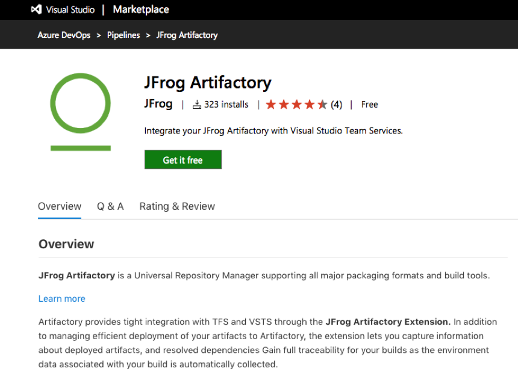
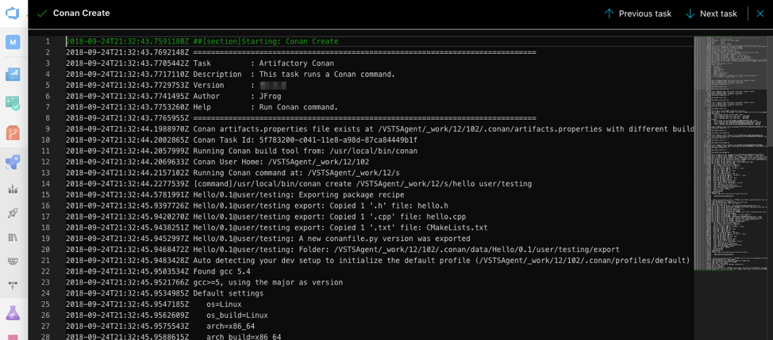
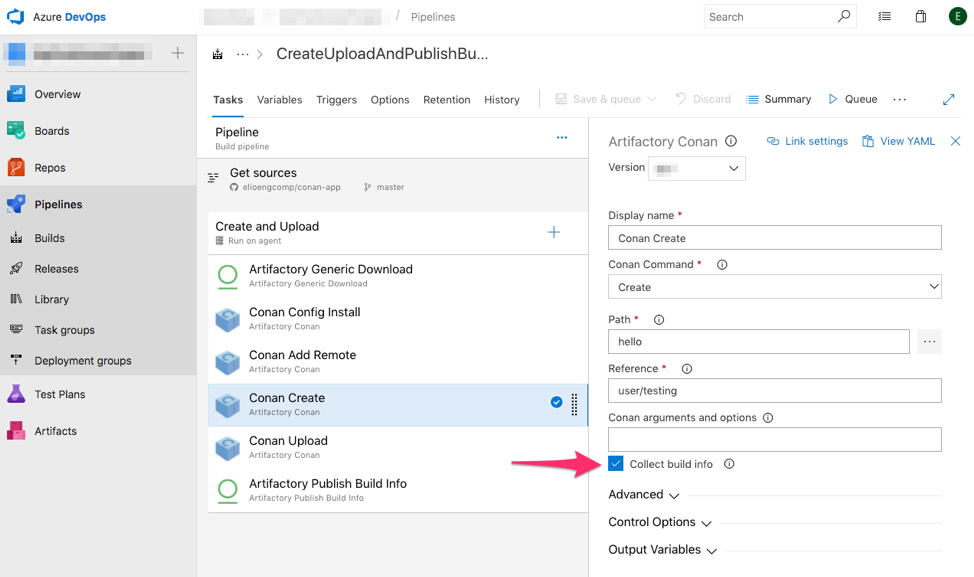
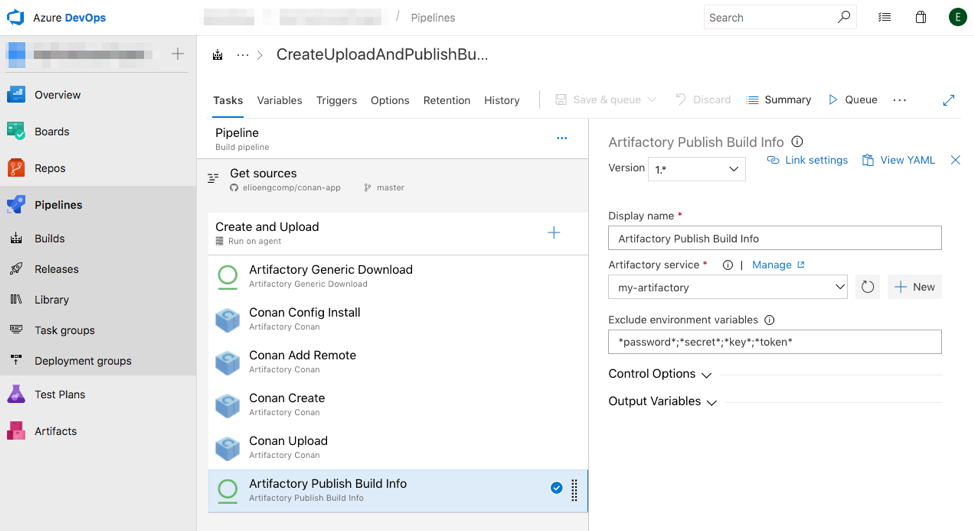
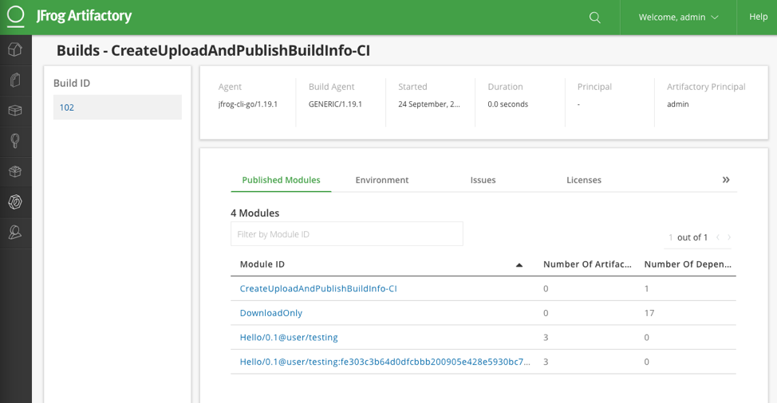

Microsoft’s Azure DevOps (TFS, VSTS)
Microsoft’s Azure DevOps (TFS, VSTS)
Thanks to the JFrog Artifactory Extension for Azure DevOps and TFS it is possible to support Conan tasks and integrate it with the CI development platform provided by Microsoft’s Azure DevOps and the Artifactory binary repository manager.
The support for Conan now in the JFrog Artifactory Extension helps you perform the following tasks in Azure DevOps or TFS:
Run Conan commands
Resolve Conan dependencies from remote Artifactory servers
Push Conan packages to Artifactory
Publish BuildInfo metadata
Import a Conan configuration
In this section we will show you how to add Conan tasks to your pipelines using the Artifactory/Conan Extension and push the generated buildinfo metadata to Artifactory where it can be used to track and automate your builds.
Configuring DevOps Azure to use Artifactory with Conan
To use the Conan support provided by the JFrog Artifactory Extension you must configure a self-hosted agent that will enable Conan builds for your Azure Pipelines environment. Afterwards you can install the JFrog Artifactory Extension from the Visual Studio Marketplace and follow the installation instructions in the Overview.
{kind=link}
When completed, proceed to create builds and access buildinfo from within Azure DevOps or TFS.
Steps to follow
In these steps, you will set up Azure DevOps to use Artifactory and add Conan tasks to your build pipeline. Then you can set up to push the buildinfo from the Conan task to Artifactory.
STEP 1: Configure the Artifactory instance
Once the Artifactory Extension is installed, you must configure Azure DevOps to access the Artifactory instance.
To add Artifactory to Azure DevOps:
{kind=link}
{kind=link}
STEP 2: Add a Conan task
Once your Artifactory connection is configured, you may add Conan tasks to your Build or Release pipelines.
To add a Conan task:
{kind=link}
{kind=link}
{kind=link}
Continue to add Conan tasks as you need for each pipeline.
STEP 3: Configure the Push task buildinfo to Artifactory
When the pipeline containing the Conan task executes, the task log shows all the information about the executed Conan command.
{kind=link}
You can configure your Conan task to collect the buildinfo by selecting the Collect buildinfo checkbox when you create the task.
{kind=link}
Once collected, the buildinfo can then be pushed as metadata to Artifactory.
To perform this, create an Artifactory Publish Build Info task to push the metadata to your Artifactory instance.
{kind=link}
After you run the pipeline, you will be able to see the build information for the Conan task in Artifactory.
{kind=link}
参见
The documentation for this integration is taken from the JFrog blog.